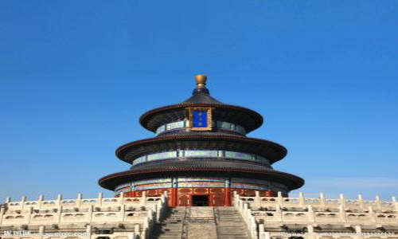
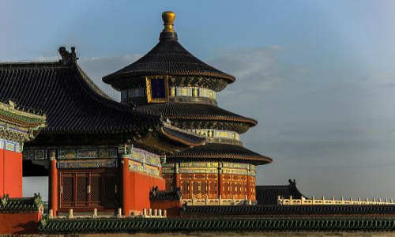
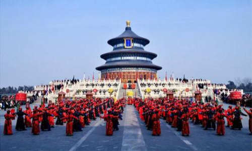

morly旅游圈
天坛，一直是北京诸多景点中，独具特色，不可被忽视的一个存在。这里集大成的建筑学、天文学、声学内涵，使得不少人对此充满向往。而但凡前去，都又会被它再次震惊和折服。 北京天坛， 位于北京东城区永定门内大街东侧。是北京非常值得一去的旅游打卡地，更是世界文化遗产，独具特色，赫赫有名。这里设计精巧，一步一景，方寸之间都彰显着智慧与章法，古往今来为人们所称道。 共分为内坛、外坛两部分，内坛北部为“祈谷坛”，是皇帝在春季举行祈谷大典的场所，主要有祈年殿、皇乾殿等。 南部为“圜丘坛”，是皇帝冬至日祭天的地方，主要有圜丘坛、皇穹宇及配殿、神厨及宰牲亭等。 游玩天坛，除了观赏各殿堂的精巧建筑，回音壁、三音石等奇巧的设计也一样令人慨叹古人的智慧。 游览一般都是南门进北门（或东门）出，依次参观圜丘、皇穹宇、丹陛桥、祈年殿和皇乾殿后离开。
用途独特: 天坛，是明清皇帝祭祀用的场所，主要有两大活动：祭天、祈谷。古代皇帝被认为是“天之骄子”，承天命继大统，因此感谢皇天厚土之恩德，护佑天下苍生百姓，祝祷祈福安康兴旺五谷丰登，乃重中之重。天坛就是因此而建。所以，在祝天祷告这一官方习俗逐渐少见的今天，人们对这项神秘的仪式，充满好奇感。天坛就是一探究竟的好地方。
建造讲究: 由于是用于祭祀，处处讲究，天坛的建筑，融入了大量力学、建筑学、几何学、天文学等知识。这里的细节充满奥秘，深挖之后令人惊叹。为了彰显皇家气派威严，并饱含寓意，天坛从各个殿庙的选址、布局，到建筑砖石梁柱的用材用量，都寻求不同维度的契合，以达到“天人合一”的至高境界。
声学精妙: 天坛还有一大特色，就是它将建筑与声学进行了绝妙的结合。回音壁、三音石、圜丘的建造中，都对声学进行了精妙运用，被公认为三大声学奇迹。看似平平的回音壁，可以十米之外传声；站在三音石上讲话，就能在不同的石板上，听到不同次数的回响；站在圜丘台的圆心石上讲话，可以听到从四面八方传来的呼应；站在对话石上讲话，可以像打电话一样产生即时通讯的效果。这些，至今被人们津津乐道。
游玩线路: 天坛内的景点布局比较工整。所以虽然分4个门，但是无论从哪个门进入，都可以不走回头路的游览一遍。而且四个门，都有地铁或公交可以到达。所以可以根据自己的情况，选择最合适的线路。
1、北门入园: 皇乾殿-祈年殿（可顺带游览神厨、长廊、宰牲亭）-丹陛桥-九龙柏-皇穹宇-回音壁-圜丘-神乐署-斋宫-钟楼-月季园-百花园-西门（出园）
2、东门入园: 宰牲亭-神厨-皇乾殿-祈年殿-丹陛桥-皇穹宇-回音壁-圜丘-神乐署-斋宫-百花园-月季园-西门（出园）
3、南门，西门入园: 南门和西门入园，可分别根据以上两条线路，倒序游览。当然，也可以根据自己喜好调整安排哦~
交通: 公交： 天坛南门：36、120、122路。 天坛西门：2、20，120路。 天坛北门：6、34、35、36、106、111路。 天坛东门：6、25、34、35、36、39、41、43、60、610、684、685、723、814路。 地铁：乘坐地铁5号线至天坛东门站。
门票: 门票:成人票15人民币/优惠票7.5人民币；联票:成人票34人民币/优惠票17人民币 (4月1日-10月31日 周一-周日) 门票:成人票10人民币/优惠票5人民币；联票:成人票28人民币/优惠票14人民币；景点联票:成人票20人民币/优惠票10人民币 (11月1日-次年3月31日 周一-周日)
开放时间: 06:00-22:00；停止售票时间:20:00 (4月1日-10月31日 周一-周日) 06:30-22:00；停止售票时间:20:00 (11月1日-次年3月31日 周一-周日)
内容整理至网络，如有侵权，请联系我们！1255394075@qq.com
  